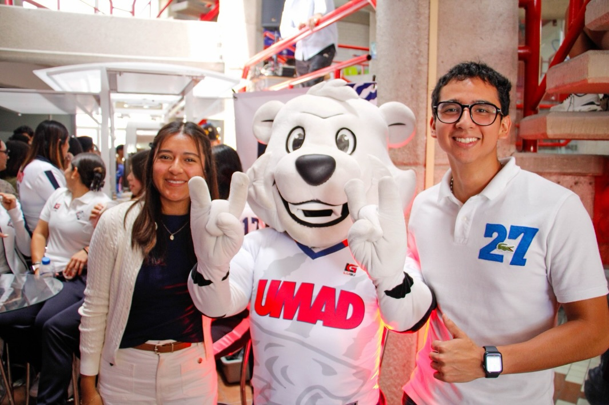
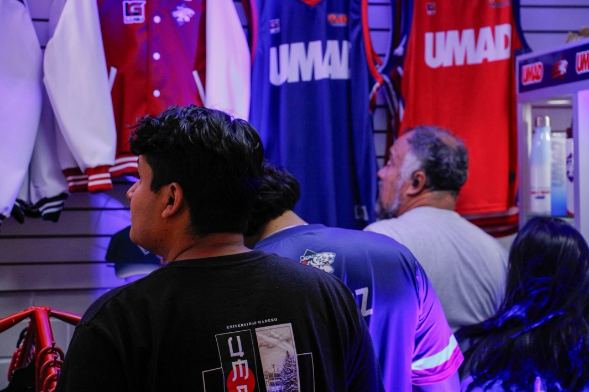
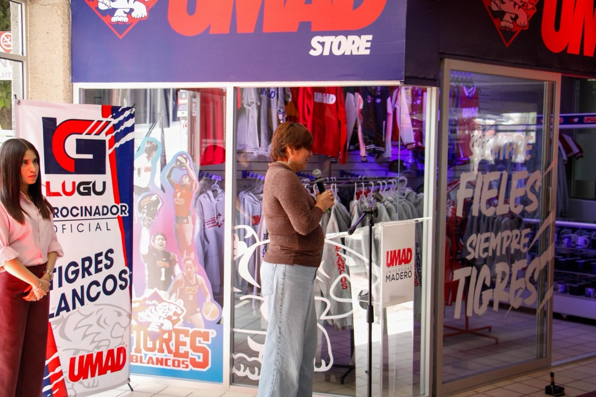
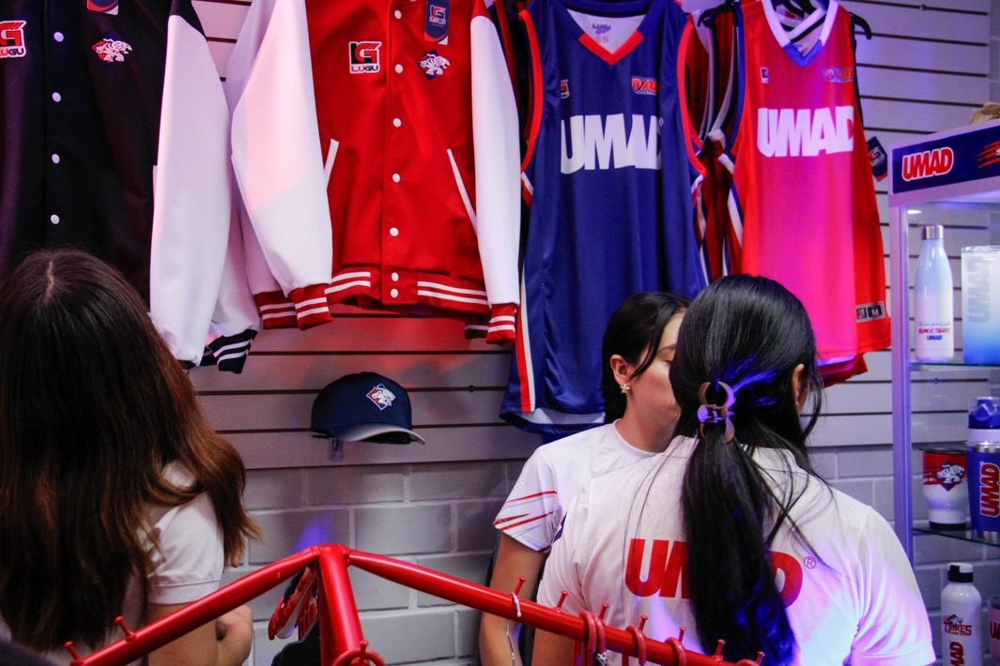

★★★★★
"La chamarra universitaria tiene una calidad increíble. Me abriga perfecto para las clases de las 7 am. ¡Totalmente recomendada!"
- Espitia (Usuario de Linux)
Proyecto Ropa UMAD
Bienvenidos a nuestra tienda, el lugar donde el orgullo universitario se lleva puesto en cada chamarra, termo y sudadera.
Este proyecto nació de un sentimiento muy profundo y transformador. Nuestro compañero e integrante, Gael Alejandro, sufrió la dolorosa pérdida de un ser muy amado (Una Manzana). En su proceso de duelo, buscó una forma de honrar a esa persona especial y de mantener su memoria viva a través de algo que representara unidad, calidez y pertenencia. Encontró esa inspiración en su segunda casa: la UMAD.
Gael se dio cuenta de que los recuerdos más valiosos se construyen en comunidad. Así, compartió esta visión y reunió a un equipo de amigos para crear una línea de productos universitarios. Cada chamarra que abriga en las mañanas frías, cada botella que nos acompaña a clases y cada sudadera, está diseñada para recordarnos que los lazos que forjamos en la escuela nos acompañan para siempre. Hoy, este proyecto es un tributo al amor, la resiliencia y el espíritu inquebrantable de nuestra comunidad estudiantil.
Ofrecer a la comunidad estudiantil, egresados y familias de la UMAD, artículos de la más alta calidad que refuercen su identidad universitaria. Buscamos que cada producto sea un emblema de pertenencia y un recuerdo tangible de los mejores años, fomentando la unidad y el orgullo por nuestra institución.
Inspirados en la majestuosidad y el espíritu de nuestra mascota, el Tigre, nos regimos por los siguientes valores:
Nuestros productos en el campus, usados por la manada.




★★★★★
"La chamarra universitaria tiene una calidad increíble. Me abriga perfecto para las clases de las 7 am. ¡Totalmente recomendada!"
- Espitia (Usuario de Linux)
★★★★★
"El termo mantiene mi café caliente por horas, y el diseño del tigre se ve genial. Gran trabajo, chicos."
- Manu M. (Negocios)
★★★★★
"Compré la sudadera para un regalo y le encantó. Excelente servicio al cliente y orgullo UMAD al 100%."
- James Rumbaugh (Egresado)
★★
"Están muy caras, me compré una y me la robaron"
- Gael Alejandro (Usuario de Windows)
★★★★★
"Súper rápidos con la entrega dentro del campus. La botella de agua es súper práctica y el logo no se despinta para nada."
- Andrés R. (Comunicación)
Cofundador

Cofundador

Cofundador e Inspiración del Proyecto
Cofundador